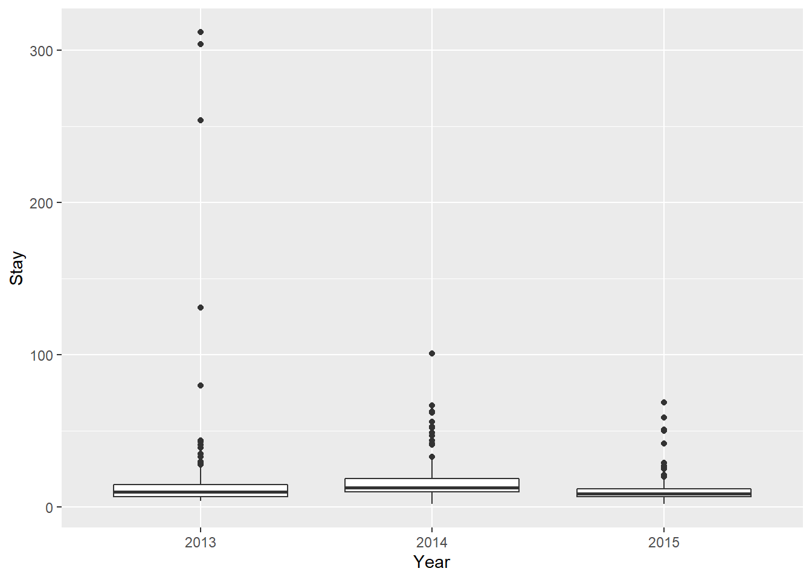

10.2 Linear regression
As with group effects, the interpretation of a single, continuous predictor is pretty straightforward. Here, all we are doing is looking to use the equation for a line we have fit (y = b + mx) to predict the effects of one continuous variable on another. Let’s use the ‘swiss’ data again for this. Remember that this dataset compares fertility rates to a number of socio-economic indicators:
## [1] "Fertility" "Agriculture" "Examination" "Education"
## [5] "Catholic" "Infant.Mortality"We’ll make a model to predict the effect of education level on fertility:
# Make the model and save it to a named object called 'swiss.mod'
swiss.mod <- lm(Fertility~Education, data = swiss)Next, we can look at the coefficient estimates for swiss.mod:
##
## Call:
## lm(formula = Fertility ~ Education, data = swiss)
##
## Residuals:
## Min 1Q Median 3Q Max
## -17.036 -6.711 -1.011 9.526 19.689
##
## Coefficients:
## Estimate Std. Error t value Pr(>|t|)
## (Intercept) 79.6101 2.1041 37.836 < 2e-16 ***
## Education -0.8624 0.1448 -5.954 3.66e-07 ***
## ---
## Signif. codes: 0 '***' 0.001 '**' 0.01 '*' 0.05 '.' 0.1 ' ' 1
##
## Residual standard error: 9.446 on 45 degrees of freedom
## Multiple R-squared: 0.4406, Adjusted R-squared: 0.4282
## F-statistic: 35.45 on 1 and 45 DF, p-value: 3.659e-07From this summary, we can see that we have an intercept of…
…and a ‘slope’ for Education of…
As with the case of categorical explanatory variables, we are now interested in understanding how the response changes with respect to the variable of interest. But, this time we want to see what the mean (or some other measure) of the response is for all possible values of the explanatory variable from the lowest value to the maximum value, rather than just a few discrete values that we observed. To do this, we first need to formalize our equation. Let’s make a function that will predict the mean fertility for any given value of education level based on our model:
Now, we can apply that function to either our observed data, or to newly generated data to make some predictions!
# Using our observed data:
# Calculate new y values using
# the model parameters and our new data
obs_fit <- y_fert(swiss$Education)
# Plot the results
plot(swiss$Education, obs_fit, type='l',
xlab='Education level', ylab='Fertility index')
# Using new data based on the range of our explanatory variable:
# Make a sequence of new values based on the range of our data
newEd <- data.frame(seq(from=min(swiss$Education),
to=max(swiss$Education),
by=0.01))
# Give the only column a name that
# matches the data in the model above
names(newEd) <- 'Education'
# Predict changes in fertility
# based on education using our new values for
# education level, 'newEd', and
# our model parameters
pred_fit <- y_fert(newEd$Education)
# Plot the changes
par(new=TRUE) # This tells R to add it to the same graph
plot(swiss$Education, obs_fit, type='l', col='red', xlab='', ylab='')
As you can see, the plotted lines completely overlap, which is exactly what we would expect.
This is really useful for showing the effects of a continuous explanatory variable on the response, but there are a couple of issues:
1. We are showing the model predictions without any data, which can be use- ful sometimes in very complex datasets but not for simple linear models.
2. We are only showing the mean predictions. It would be nice to incorporate some of the uncertainty in our model, too.
How can we fix these things? Glad you asked! First of all, we can actually plot the raw data against our predictions…
# Make the plot
plot(swiss$Education, swiss$Fertility,
ylab='Fertility index',
xlab='Education level',
pch=21, bg='gray',
ylim=c(0, 100),
cex=1.5, cex.lab=1.5, cex.axis=1.25,
yaxt='n')
axis(side = 2, las = 2)
# That's better. Now, we can plot
# our predictions over the top of that
lines(swiss$Education, obs_fit, col='blue', lwd=2)
What about the uncertainty in our model and our data? We can add this in by using the handy-dandy predict function in R!
To get info on how to do this for linear models, scroll down and click on the link to predict.lm. You will see that we need to supply some kind offitted model object, some data from which to make predictions, and the type of interval you would like to show.
object: in this case it is swiss.mod
newdata: This needs to be a data frame. It can either be the original, or it can be a new dataframe, but it must contain columns with the same names as the explanatory variables used in the model.
interval: usually, we are interested in the prediction interval, as this tends to be more honest about the uncertainty in our model predictions and our data, but there are other options
So, what does the predict function give us?
## fit lwr upr
## 1 78.74771 59.30196 98.19346
## 2 78.73908 59.29377 98.18440
## 3 78.73046 59.28559 98.17534
## 4 78.72184 59.27740 98.16628
## 5 78.71321 59.26921 98.15722
## 6 78.70459 59.26102 98.14816As you can see, this is a matrix with three columns named fit, lwr, and upr. The column fit is the mean prediction from our model for the new data. The columns lwr and upr are the lower and upper limits for our prediction intervals. We already have our mean line fit, so we’ll just throw in some lines for the lower and upper bounds to our predictions! To do this, we can’t use our dollar-sign notation for pred_int because it is a matrix, so we can either do pred_int[ , i] or pred_int[ , 'colname i'].
# Make the original plot
plot(swiss$Education, swiss$Fertility,
ylab='Fertility index',
xlab='Education level',
pch=21, bg='gray', ylim=c(0, 100),
cex.lab=1.5, cex.axis=1.25, cex=1.5,
yaxt='n')
axis(side = 2, las = 2)
# Add line for mean predictions over the top of that
lines(swiss$Education, obs_fit, col='blue', lwd=2)
# Add prediction intervals
lines(x=newEd$Education, y=pred_int[ ,2], col='red', lty=2, lwd=2)
lines(x=newEd$Education, y=pred_int[ ,3], col='red', lty=2, lwd=2)
Now that is a money, high-quality figure that shows your raw data, the model predictions, and the uncertainty associated with both of these.